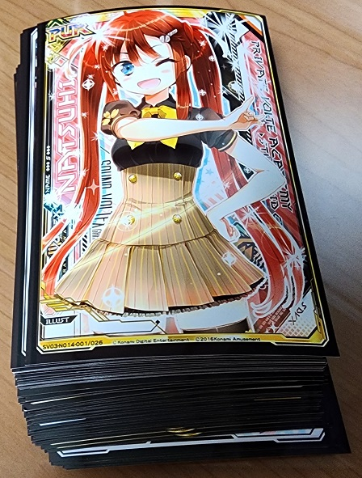

SkyWareNET은 NHN 고도호스팅의 한 달 300원짜리 상품을 이용해 불안정하게 운영되고 있습니다. 일 호스팅 제한량이 500MB라 많은 기능을 제한한 점 양해 부탁드립니다.
SkyWare 팀원 소개 SkyWare 팀에는 2023년 4월 16일 현재 1명의 팀원이 있습니다.
하늘토끼(소라메 하토) 직책 : 팀장, 총괄 프로그래밍, 기획, 스토리, 홍보 등 | CONTACT
스카이웨어팀의 팀장. 2011년 4월 30일에 하늘소프트웨어(현 스카이웨어)라는 팀을 만들어서 지금까지 운영하고 있다. 사실 스카이웨어팀의 대부분의 성과는 중학생 때 까지의 성과고 고등학교 때부터 의욕을 잃어서, 계속 옛날 것 우려먹기 + 추억팔이만 하는 중이다.
CrystalDiskInfo의 개발자 hiyohiyo님의 MMD(모에 주도 개발)을 받아들여서 개발하고 있는 것 같다. 스이쇼 시즈쿠보단 프로나마짱을 더 좋아하지만 CrystalDiskInfo는 시즈쿠 에디션을 사용하고 있다.
주로 하는 게임은 오락실 리듬게임. RPG나 FPS 같은 건 화면 전환이 너무 빠르고 동작이 불규칙해서 도저히 못 할 것 같다고 한다.
사운드 볼텍스 : 부 주력 게임. 볼포스는 14.091인데 15렙 어려운 곡도 못 깬다. 볼포를 13렙 UC와 14렙 970으로 올려서 그런 듯. 망할 놈의 가챠 시스템에 조금 돈을 많이 들어부어서 PUR 카드 두 장(리얼 제네레이터)과 쿠레하(EXCEED GEAR), 그레이스(SuddeИDeath)를 보유하고 있다. (Vaddict 유저 페이지, 공식 홈페이지 호적수 창)
 여태까지 사운드 볼텍스의 리얼 제네레이터에서 뽑은 제네시스 카드. 정확히 58장이다. 두 장은 태릉 비트연구소T에서 가지고 온 거고 8장에 17크레딧(8500원)이니까 6만원이나 썼다. 가챠는 작작 돌리자.
팝픈뮤직 : 주력 게임. 40레벨 쉬운 곡을 간신히 깰 수 있을 정도다. 35~39렙에서 어려운 곡은 못 깬다. 특히 히데오 체조는 절대로 못 깬다. 팝픈클래스는 81.92. 드럼 앤 플라이(45랩) 이지클, 언젠가 어른이 될 수 있으면 좋겠네(44렙) 이지클 등으로 올렸다. 언더테일 곡과 츠유 곡이 팝클의 효자 노릇을 하고 있다. 와 샌즈 아시는구나...
이 외 기타도라 GuitarFreaks, 노스텔지어, DDR, 펌프 잇 업, 마이마이, beatmania IIDX 등도 하고 있다.
D4DJ Groovy Mix : 10+레벨 정도 까지는 GREAT FULL COMBO를 찍을 수 있을 만 한 실력이다. 하지만 PERFECT FULL COMBO는 1레벨의 제일 쉬운 곡도 못 찍는다. 플레이어 ID는 zCZF2LH3.
클로저스 : 유일하게 하늘토끼가 하는 게임 중 리듬게임이 아닌 게임. SkyDetecter(루나)를 주로 키우고 있다. 분명히 클로저스를 사전예약을 했는데 9년이 지난 지금까지도 뉴비다. 클로저 명은 벚꽃빛.
소라메 하토(空芽ハト)라는 닉네임은 소라카도 아오(Summer Pockets / key, 2018)의 소라, 메우 메우(히나비타♪ / 코나미 디지털 엔터테인먼트, 2012~2023)의 메, 하늘토끼의 하토를 따와서 만든 것이다.